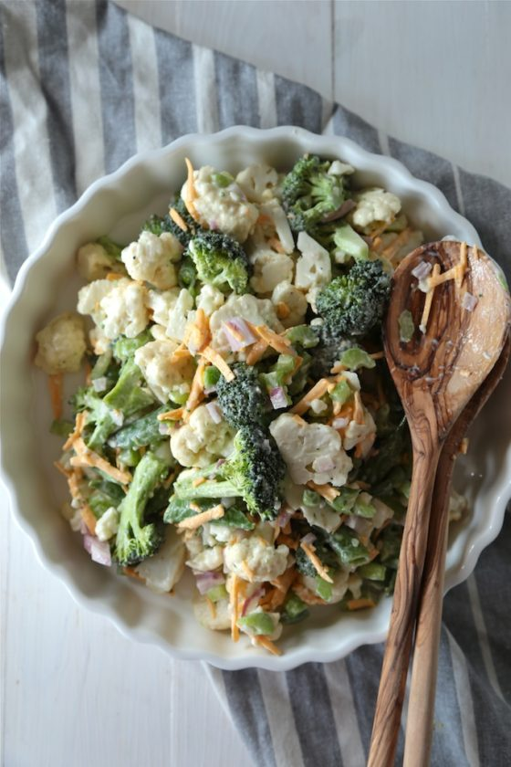

!DOCTYPE html>
recipes
Spring Salad

People are surprised when they taste this salad with the odd combination of ingredients, but it's a very very
good
salad.
- 12 slices bacon
- 2 heads fresh broccoli, florets only
- 1 cup chopped celery
- 1/2 cup chopped green onions
- 1 cup seedless green grapes
- 1 cup seedless red grapes
- 1 cup all-purpose flour
- 1/2cup raisins
- 1/2
cup blanched slivered almonds
- Place bacon in a large, deep skillet. Cook over medium high heat until evenly brown. Drain, crumble and set
aside.
- In a large salad bowl, toss together the bacon, broccoli, celery, green onions, green grapes, red grapes,
raisins and
almonds.
- Whisk together the mayonnaise, vinegar and sugar. Pour dressing over salad and toss to coat. Refrigerate
until ready to
serve.